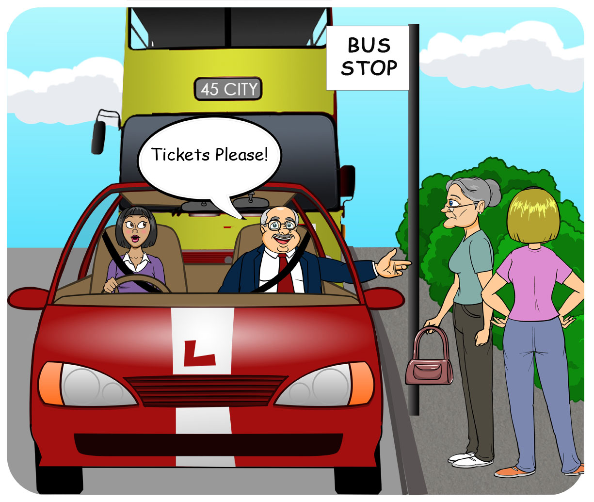
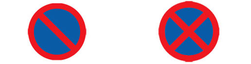
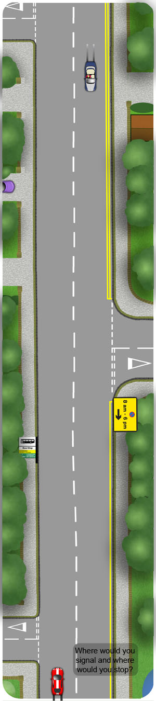

Mirrors
Looking for:
- Closely Following or fast moving traffic
- Mopeds or cycles
Signal
Signal left if there is anybody around to benefit, following or oncoming traffic for example.
The signal should be nice and early but not misleading. Pass any prior side roads before signalling
Make sure you signal before slowing down so that the driver behind has time to react, especially where there is closely following traffic.
Manoeuvre
- Come off of the gas
- Use gentle brake as required. Where there is closely following traffic, use early and smooth braking
- Steer gradually towards the kerb and straighten up when your nearside (leftside) front wheel is close. Avoid scraping your tyres against the kerb as this will damage them
- Put the clutch all of the way down just before the vehicle stops
- With the clutch and footbrake still depressed, apply the handbrake and select neutral
- Cancel the indicator if you used it
- Release the pedals

Aim for a safe, legal and convenient parking place.
This means you should avoid parking:
- On sharp bends
- Too close to junctions. (Allow at least 10 yards for vehicles using the junction)
- Opposite side roads
- Alongside or opposite bus stops
- Over driveways
- On the approach to pedestrian crossings
- On double yellow lines
- On single yellow lines where restrictions apply
- Where you see these signs:

No Waiting No Stopping
Consider where the red car might signal and where it might stop in the following image:

To view the typical controls for pulling over to stop, click Here
Come to a smooth stop by using progressive braking. This means using the brakes early and gently, gradually increasing the pressure then easing off slightly, just as the vehicle stops.
You should stop close to the kerb and straight, so that the road clear for passing traffic. Achieving this position without bumping into the kerb can take some practice.